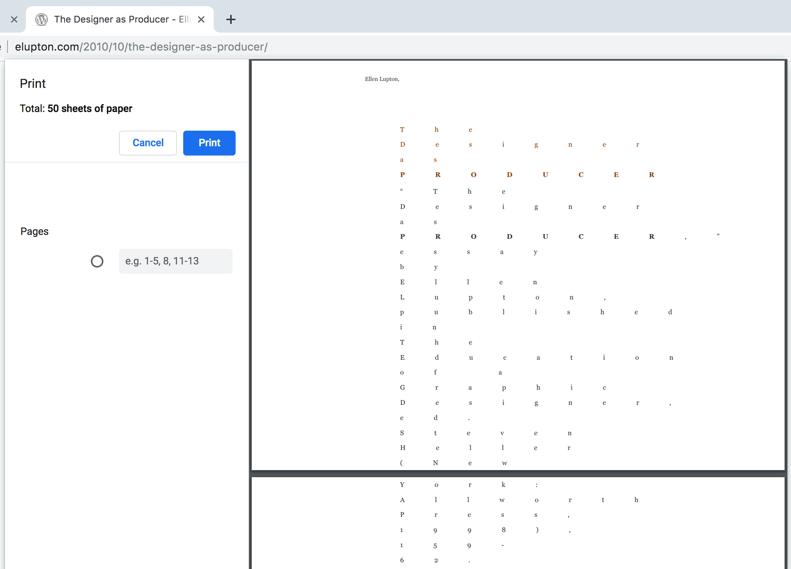

Graphic design was one of the first professions impacted by the personal computer. Its introduction had multiple implications: we embraced the computer as yet another available tool on our desks, and adapted to software that distanced us from production. This separation of conception and planning from making and production became part and parcel of what it means to be a contemporary designer.
Instead of collectively agreeing to the same streamlined tools sold to us by large software companies, we need to reclaim the personal relationship to production we once had.
This project is an open source tool that intervenes in a web page’s printing process, thus interrupting the user’s expected output. I used p5.js (a JavaScript library that makes coding accessible for artists, designers, educators, and beginners, reinterpreted for today’s web) to develop a Chrome extension that creates a range of typographic interruptions during the act of printing.
Download tool here
